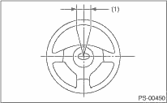
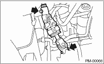
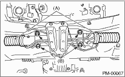
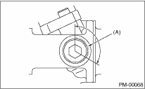
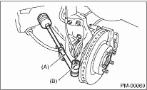
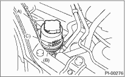
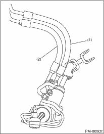
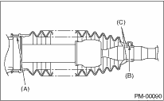

PERIODIC MAINTENANCE SERVICES > Steering System (Power Steering)
1. Set the steering wheel in a straight-ahead position, and check the wheel spokes to make sure they are correctly set in their specified positions.
2. Lightly turn the steering wheel to the left and right to determine the point where front wheels start to move.
Measure the distance of the movement of steering wheel (outer periphery).
Steering wheel free play:
0 — 17 mm (0 — 0.67 in)

|
(1) |
Steering wheel free play |
Move the steering wheel vertically toward the shaft to ascertain if there is play in the direction.
Limit of play:
0.5 mm (0.020 in)
3. Drive the vehicle and check the following items.
(1) Steering force:
The effort required for steering should be smooth and even at all points, and should not vary.
(2) Pulled to one side:
Steering wheel should not be pulled to either side while driving on a level surface.
(3) Wheel runout:
Steering wheel should not show any sign of runout.
(4) Return shape:
The steering wheel should return to its original position after it has been turned by hand and then released.
When the steering wheel free play is excessive, disconnect the universal joint of steering shaft and check it for any play and yawing torque (at the point of the crossing direction). Also inspect for any damage to sealing or worn serrations. If the joint is loose, retighten the mounting bolts to the specified torque.
Tightening torque:
24 N·m (2.4 kgf-m, 17.4 ft-lb)

1. Set the steering wheel in the straight position, then rotate it 90° in both the left and right directions.
While steering wheel is being rotated, check the looseness of the gear box.
Tightening torque:
60 N·m (6.1 kgf-m, 44.3 ft-lb)

|
(A) |
Boot |
|
(B) |
Gearbox mounting bolt |
2. Check the boot for damage, cracks or deterioration.
3. With the vehicle stopped on a level surface, quickly turn the steering wheel to the left and right.
While steering wheel is being rotated, check the gear backlash. If any noise is noticed, adjust the gear backlash in the following manner.
(1) Tighten the adjusting screw to 9.8 N·m (1.0 kgf-m, 7.2 ft-lb) and then loosen.
(2) Tighten the adjusting screw to 4.9 N·m (0.5 kgf-m, 3.6 ft-lb) and then loosen.
(3) Retighten the adjusting screw to 4.9 N·m (0.5 kgf-m, 3.6 ft-lb), back it off by 26° and secure it.
(4) Apply liquid gasket to at least 1/3 of entire perimeter of adjusting screw thread.

|
(A) |
Apply liquid gasket to at least 1/3 of entire thread. |
(5) Install the lock nut. While holding the adjusting screw with a wrench, tighten the lock nut using ST.
| ST 926230000 | SPANNER |
Tightening torque (lock nut):
39 N·m (4.0 kgf-m, 28.9 ft-lb)
Hold the adjusting screw with a wrench to prevent it from turning while tightening the lock nut.
1. Check the tie-rod and tie-rod ends for bends, scratches or other damage.

|
(A) |
Tie-rod end |
|
(B) |
Knuckle arm |
2. Check the connections of the knuckle ball joints for play, inspect for damage on dust seals, and check that there is no free play in the ball studs. If castle nut is loose, retighten it to the specified torque, then tighten further up to a maximum of 60° until the cotter pin hole is aligned.
Tightening torque:
27 N·m (2.75 kgf-m, 19.9 ft-lb)
3. Check the lock nut on the tie-rod end for tightness. If it is loose, retighten it to the specified value.
Tightening torque:
83 N·m (8.5 kgf-m, 61.5 ft-lb)
NOTE:
• Check at power steering fluid temperature 20°C (68°F); read the fluid level on the “COLD” side.
• Check at power steering fluid temperature 80°C (176°F); read the fluid level on the “HOT” side.
1. Stop the engine to park the vehicle on a level surface.
2. Check the fluid level using the scale on the outside of the reservoir tank (A). If the level is below “MIN” (B), add fluid to bring it up to “MAX” (C).

NOTE:
If fluid level is at “MAX” level or above, drain fluid to keep the level in the specified range of indicator by using a syringe or the like.
Recommended fluid:
DEXRON III
Fluid capacity:
0.7 L (0.7 US qt, 0.6 Imp qt)
6. POWER STEERING FLUID FOR LEAKS
Inspect the underside of oil pump and gearbox of power steering system, hoses, pipes and their couplings for fluid leaks.
If the fluid leaks are found, retighten their fitting bolts (or nuts) and/or replace their parts.
CAUTION:
• Wipe the leaked fluid off after correcting fluid leaks.
• Also pay attention to interference between hoses or pipes and other parts when inspecting fluid leaks.
• Be careful not to spill the power steering fluid on exhaust pipe to prevent it from emitting smoke or causing fires. If power steering fluid adheres, wipe it off completely.
7. HOSES OF OIL PUMP FOR DAMAGES
Check the pressure hose and return hose of oil pump for crack, swell or damage. Replace the hose with a new part if necessary.
CAUTION:
Prevent hoses from turning and/or bending when installing hoses.

|
(1) |
Pressure hose |
|
(2) |
Return hose |
8. POWER STEERING PIPES FOR DAMAGES
Check the power steering pipes for corrosion and damage.
Replace the pipes with new parts if necessary.
Inspect both sides of the gearbox boot as follows, and correct the defects if necessary.
1. The (A) and (B) positions of the gearbox boot are fitted in (A) and (C) grooves of gearbox and the rod.
2. Clips are fitted outside of positions (A) and (B) of boot.
3. Check that there is no cracks or holes in the boot.
NOTE:
Rotate (B) position of gearbox boot against the torsion produced by the adjustment of toe-in etc. Apply grease to the groove (C).

Inspect the installation bolts and nuts of the oil pump and bracket for looseness, and retighten them if necessary.
NOTE:
Inspect and/or retighten the bolts and nuts when the engine is cold.